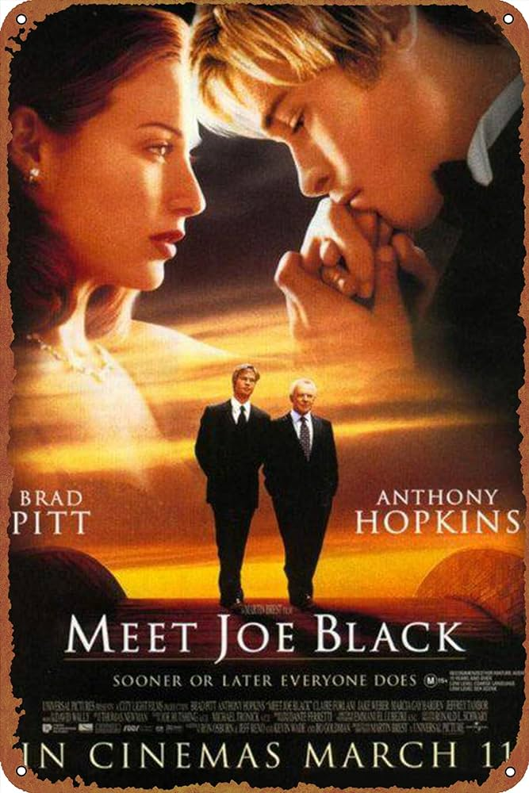
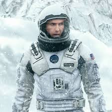

I like this movie because the acts are perfect as same as the story.
This is one of the Nolan's greatest works, where you find yourself drwoned in feelings.
A cute easy to watch korean drama to spend your evening with.
Contact me via my social accounts to tell me about it.